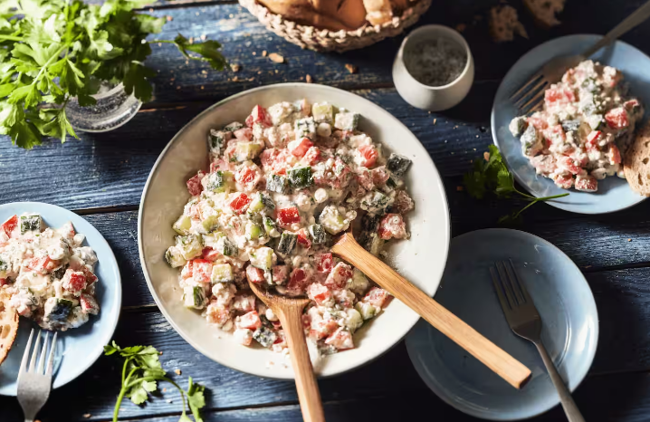

Hüttenkäsesalat
Zutaten
- 1 Gurke
- 3 Tomaten
- 1 Paprika (rot)
- 15 g Petersilie (glatt)
- Salz
- Pfeffer
- 400 g Hüttenkäse
Zubereitung
- Gurke, Tomate und Paprika waschen und abtrocknen.
- Von der Tomate den Strunk wegschneiden, von der Paprika die Kerne und den Stiel wegschneiden.
- Das Gemüse dann in gleichgroße Stücke schneiden (ca. 1 cm).
- Die Petersilie waschen, trockenschütteln und die Blätter fein hacken.
- Gemüse und Petersilie vermengen und mit Salz und Pfeffer abschmecken.
- Zuletzt den Hüttenkäse untermengen.

Leckerer hausgemachter Hüttenkäsesalat.